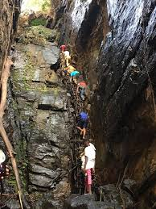
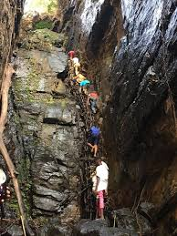

les chutes de la soumba
Un lieu incontournable pour les amoureux de la nature.


Explorez les merveilles naturelles et culturelles de la Guinée.
Un lieu incontournable pour les amoureux de la nature.
Une aventure unique au coeur de la biodiversité guinéenne.
 



du 20 au 24 mai 2025, decouvrer la culture guinéenne à travers le rire et expositions
"un voyage inoubliable ! Les paysages de Guinée sont magnifiques."
"j'ai adoré la culture et riche et l'accueil chaleureux des habitants.


Oui, un visa est nécessaire pour certaines nationalités.
La saison sèche, de novembre à avril, est idéale pour visiter la Guinée.